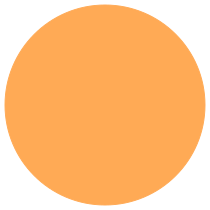
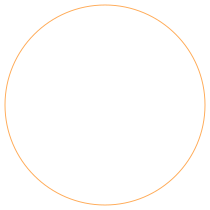

Interfaces
| Name | Description |
|---|---|
|
|
Basic quasi static magnet connector |
|  PositiveMagneticPort | Positive quasi static magnetic port |
|  NegativeMagneticPort | Negative quasi static magnetic port |
|
|
Partial two port for graphical programming |
|
|
Partial two port for graphical programming with additional variables |
|
|
Elementary partial two port for textual programming |